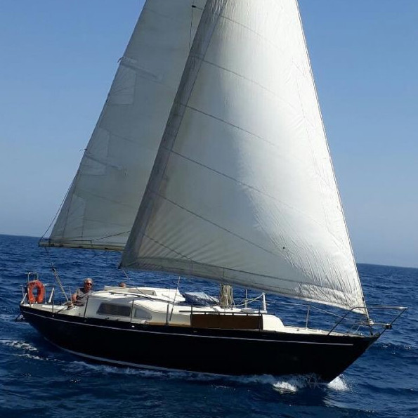

<div style="max-height: 600px; overflow-y: scroll;">
    <div style="display: grid; grid-template-columns: auto auto;">
        
        <div style="padding: 14px;">
            <h2>Rozen an Avel</h2>
            Arp&egrave;ge
        </div>
    </div>
    <div>
        <h2>The boat</h2>
        <ul>
            <li>Chantier Dufour</li>
            <li>Construit en polyester</li>
            <li>Longueur : 9,25 m&egrave;tres</li>
            <li>Largeur : 3 m&egrave;tres</li>
            <li>Moteur Renault  Coach. Type DTR20 (IB), puissance 20 cv</li>
        </ul>
    </div>
    <div>
        <h2>More info...</h2>
        R&eacute;f&eacute;rent actuel : Alain Hahusseau<br/>
        Bateau destin&eacute; &agrave; devenir un Tiny Boat    
    </div>
</div>